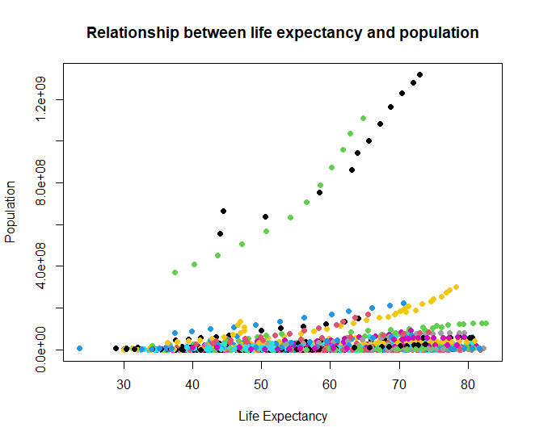

Chapter 4 Visualizastion in R
먼저 R에서 기본으로 제공하는 base 함수들로 시각화 연습을 해본 후, tidyverse의 ggplot2() 를 통해 시각화하는 연습을 해보겠습니다.
4.1 R base plot
Base 함수들 중 자주 쓰는 것들은 다음과 같습니다: plot(), hist(), barplot(), boxplot(). 이 함수들을 사용하여 gapminder 데이터를 다양하게 시각화해 봅시다.
# plot() : 변수들 간 관계를 한 눈에 볼 수 있는 이변량 그래프 그리기 (산점도; scatterplot)
plot(gapminder)예) 기대수명이 증가할수록 인구는 어떻게 변화할까요? x축은 lifeExp, y축은 pop의 값들을 산점도로 그려 표현한 것이 바로 5행 4열에 있는 그래프입니다. 패턴을 보니 lifeExp 변수와 pop 변수 간 양의 상관관계가 있습니다. 즉 기대수명이 높아질수록 인구는 증가하는 추세를 보입니다.
이 두 변수 간 그래프를 확대해 볼까요? plot(x축, y축)
plot(gapminder$lifeExp, gapminder$pop)
# options 추가
plot(gapminder$lifeExp, gapminder$pop, col=gapminder$country, pch=19,
xlab="Life Expectancy", ylab="Population",
main="Relationship between life expectancy and population")
연속형 변수의 빈도 분포를 살펴보는 데에는 hist() 함수를 사용합니다. 기대수명 변수의 히스토그램을 그려봅시다.
hist(gapminder$lifeExp)
# customize
colors() # check available colors in R
hist(gapminder$lifeExp, col="whitesmoke",
xlab="Life Expectancy", main="Histogram of Life Expectancy")
abline(v=mean(gapminder$lifeExp), col="wheat4", lty=2, lwd=2) # add line
다음은 범주형 변수의 분포를 살펴보기에 좋은 barplot() 입니다. 각 대륙에 해당하는 값들이 몇 번 등장하는지를 시각화해봅시다.
table(gapminder$continent) # 빈도표
# 빈도표 자체를 input으로 넣어서 barplot 그리기
barplot(table(gapminder$continent))
barplot(table(gapminder$continent),
col = c("lightblue", "mistyrose",
"lightcyan", "lavender", "whitesmoke"),
main = "Barplot")
마지막으로 범주형 변수 별로 연속형 변수의 분포를 살펴보기에 좋은 boxplot() 입니다. 각 대륙 별로 기대수명의 분포를 시각화해봅시다.
boxplot(lifeExp ~ continent , data = gapminder)
boxplot(lifeExp ~ continent , data = gapminder,
col = c("lightblue", "mistyrose",
"lightcyan", "lavender", "whitesmoke"),
main = 'Boxplot',
xlab = "Continent",
ylab = "Life Expectancy")
4.2 Tidyverse - ggplot2
다음은tidyverse의 ggplot2 를 통한 시각화를 연습해 보겠습니다. ggplot2의 “GG”는 Grammar of Graphics를 의미합니다. %>% (파이프 연산자)를 통해 층을 겹겹이 쌓아올려 효율적인 시각화가 가능하며, 여러가지 테마를 적용하여 customize할 수 있다는 점이 장점입니다 (반대로 말하면, 자유도가 높다는 게 처음 배울 때 진입장벽으로 작용할 수 있습니다). 하나씩 천천히 해봅시다!
기본적인 문법 구조는 다음과 같습니다:
#데이터
%>%
ggplot(aes(x=x축에 올 변수 이름, y=y축에 올 변수 이름)) + # aesthetic - coordination space 그리기
geom_point() + # geometry - geom_으로 시작하는 함수 입력
theme() # theme 적용 - 꾸미기ggplot() 함수를 통해 축을 설정하고 좌표 공간을 먼저 만들어 주신 후에는 파이프 연산자가 아닌 +로 연결을 해주세요.
# scatterplot
# basic form:
gapminder %>%
ggplot(aes(x=lifeExp, y=pop)) +
geom_point()
# color by continent:
gapminder %>%
ggplot(aes(x=lifeExp, y=pop, col=continent)) +
geom_point()
# theme:
# 아래의 패키지를 설치해 주시고, 불러와 주세요:
install.packages("ggthemes")
install.packages("ggpubr")
library(ggthemes)
library(ggpubr)
gapminder %>%
ggplot(aes(x=lifeExp, y=pop, col=continent)) +
geom_point() +
theme_pander() + # 테마 설정
xlab("Life Expectancy") + # x축 라벨
ylab("Population") # y축 라벨
gapminder %>%
ggplot(aes(x=lifeExp, y=pop, col=continent)) +
geom_point() +
theme_pander() +
xlab("Life Expectancy") +
ylab("Population") +
ggtitle("Relationship between life expectancy and population") + # 그래프 제목
theme(legend.position = "bottom") + # 범례 위치
scale_color_wsj() # 색상 테마 적용 대륙별로 따로 그리고 싶다면: facet_grid() 함수를 추가. (자매품: facet_wrap() 도 있음)
gapminder %>%
ggplot(aes(x=lifeExp, y=pop, col=continent)) +
geom_point() +
theme_pander() +
xlab("Life Expectancy") +
ylab("Population") +
ggtitle("Relationship between life expectancy and population") +
theme(legend.position = "none") + # 범례 삭제
scale_color_wsj() +
facet_grid(~continent) # 대륙 별로 따로 grid를 설정 
다음은 기대수명 변수의 히스토그램을 그려봅시다.
gapminder %>%
ggplot(aes(x=lifeExp)) +
geom_histogram() +
theme_pander()
xlab("Life Expectancy")
바 그래프를 그려 봅시다. 대륙 별로 gdpPercap 변수의 평균을 계산하여 gdppc 변수를 새로 만들어 주신 후, x축에는 대륙, y축에는 gdppc 평균 값이 오도록 축을 설정해 주세요. 이번에는 Stata 테마를 적용해 보겠습니다.
gapminder %>%
group_by(continent) %>% # continent 별로
summarise(
gdppc = mean(gdpPercap) # gdpPercap 변수의 평균 값을 취해 gdppc 변수에 넣어라
) %>% # 이 데이터를 기반으로 ggplot을 그리자
ggplot(aes(x=continent, y=gdppc, fill=continent)) + # 좌표 설정
geom_col() + # 바 그래프 그려 넣을 것임을 알려주고,
theme_stata() + # 테마 설정
scale_fill_stata() # 대륙 별로 색상을 채워 넣을 때 색상 테마 또한 설정마지막으로 각 대륙 별로 기대수명의 분포를 박스플롯으로 시각화해봅시다. 테마는 미니멀 테마로 설정하고, 범례는 제거해 줍시다.
gapminder %>%
ggplot(aes(x=continent, y=lifeExp, fill=continent)) +
geom_boxplot() +
theme_minimal() +
theme(legend.position = "none")